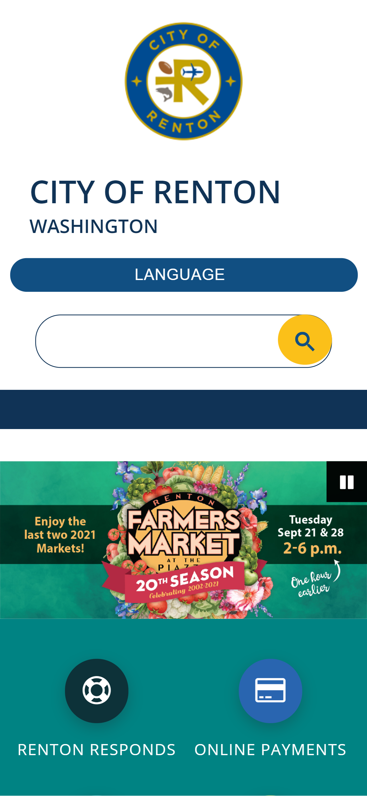
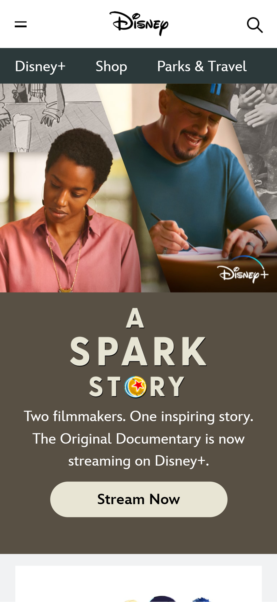
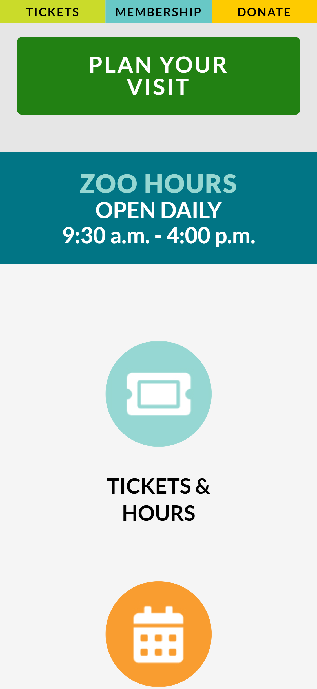

Repetition
City of Renton WA
https://rentonwa.gov The Renton city logo is enclosed in a circle. The designer has chosen to repeat the circle element throughout the page. The language button and the search bar have been rounded, and the search button is a circle. In addition to this, other buttons on the site are also circles. This gives cohesiveness to the whole site.
Hick's Law
Walt Disney Entertainment
https://disney.com Hick’s law states that the more choices you give a user, the longer it will take them to make a choice. Disney has chosen to simplify their mobile website by offering only three main options in the menu bar. These are their streaming service, their online store, and their parks. These three options will help almost all users get where they want to go very easily and very quickly. There is very little else to distract, helping to keep the focus where it’s needed.
White Space & Clean Design
Woodland Park Zoo
https://zoo.org Woodland park zoo has utilized a very clean design with lots of open white space that helps users get to where they want quickly and easily. It makes things very easy navigated and looks beautiful. (currently, there are mask rule and other COVID-19 related statements at the top of the page above this, but during non-pandemic times, those are not present)